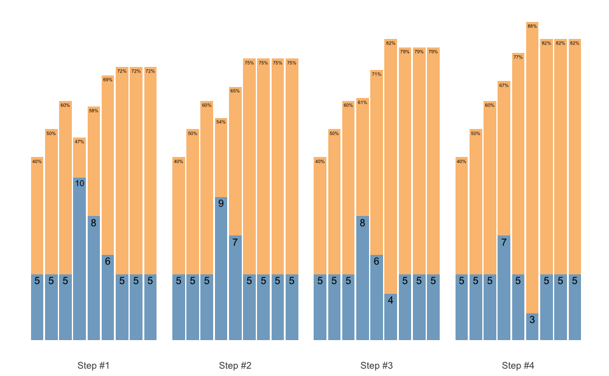
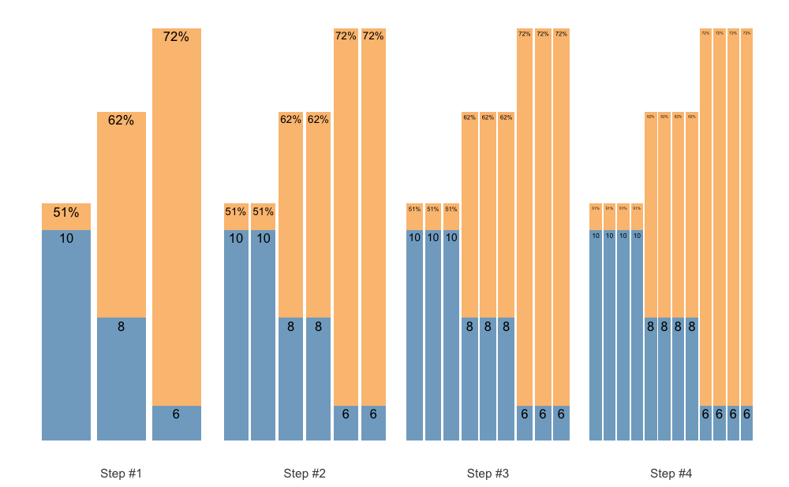
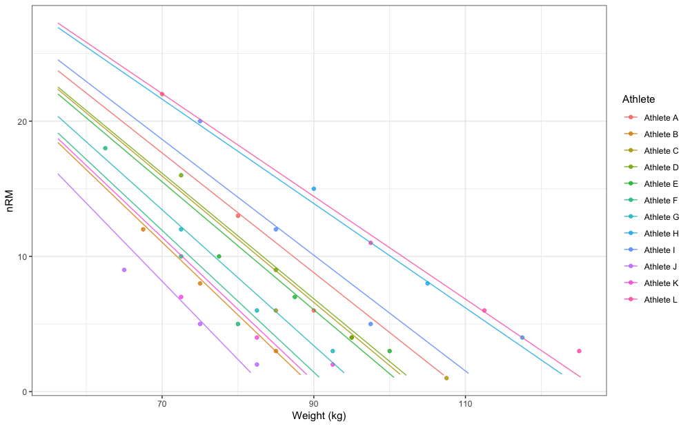
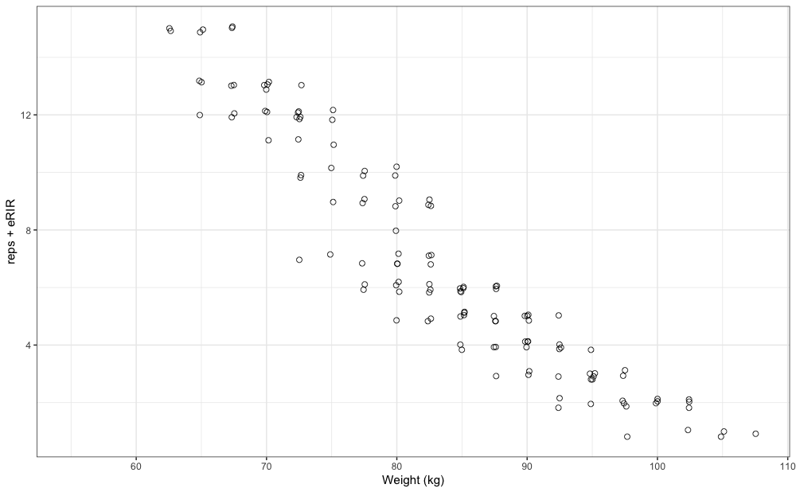
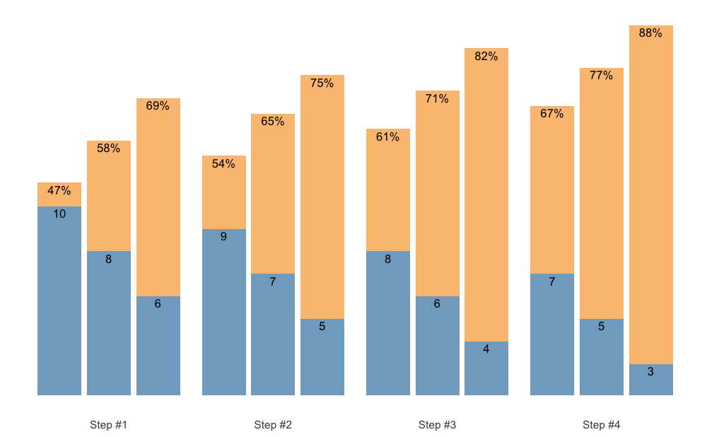
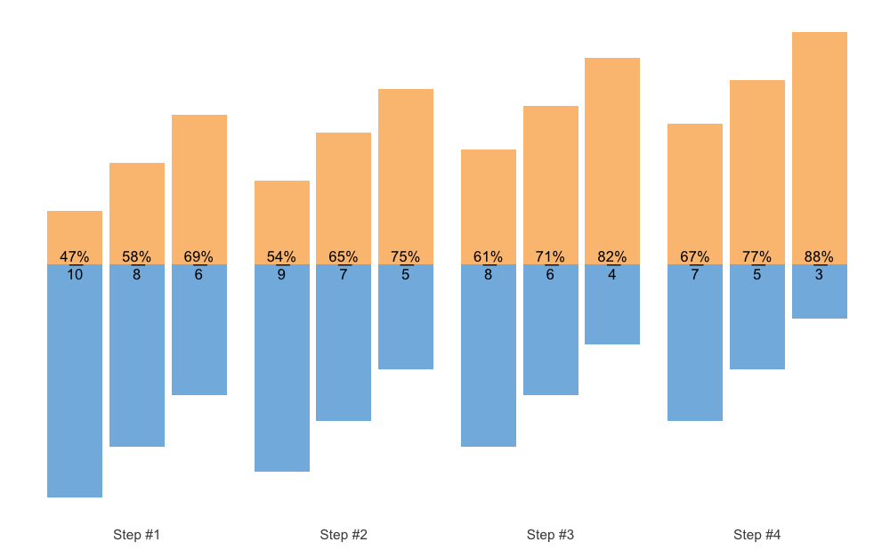
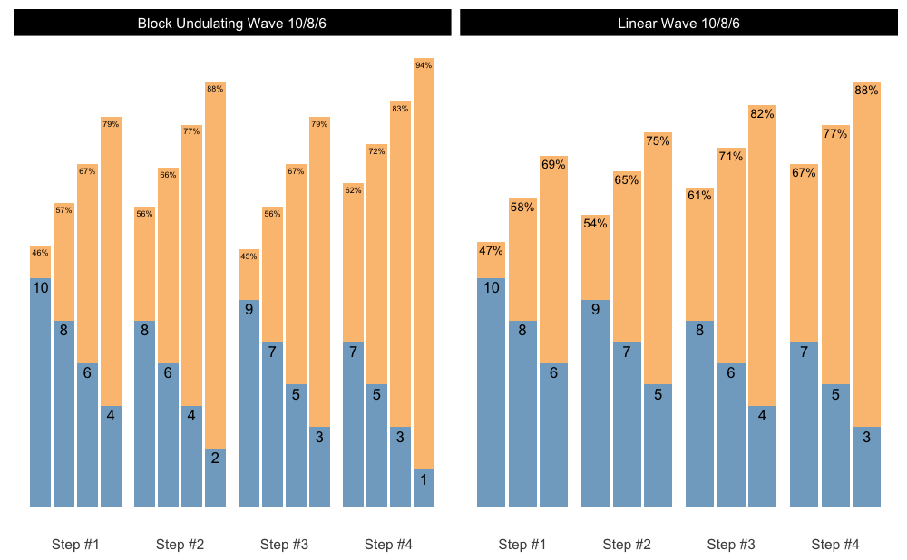

Table of Contents
This is longer README file, so here is the TOC for easier jumping to topics
- Introduction
- Installation
- Reps-Max Functions
- Adjustment Functions
- Progressions
- Vertical Planning
- Set and Rep Schemes
- Release
- Estimation
- Scheme plotting tips
- Further information
- How to cite
{STMr}
Introduction
STMr (short of Strength Training Manual R-functions) package is created to help sports scientists and strength coaches estimate strength profiles, create and visualize (percent-based) progression tables and set and rep schemes. Originally STMr package was created as an internal project/package to help me in writing Strength Training Manual Volume 3 book, but it soon became a project in itself. STMr package is open-source package under MIT License implemented in the R language.
STMr package can be divided in the following functional units:
- Reps-Max functions (start with
max_) - adjustment functions (start with
adj_) - wrapper functions
get_reps()andget_perc_1RM()are implemented to combine Reps-Max models as well as progression (adjustment) functions into easy to use format - progression functions (start with
progression_) -
vertical planning functions (start with
vertical_) -
scheme function (start with
scheme_) -
release()function for molding multiple back-to-back schemes (i.e., blocks or phases) - plotting and printing functions:
generate_progression_table(),plot_progression_table(),plot_scheme()(deprecated as of STMr version 0.1.4. Please use S3plot()method instead), andcreate_example() - built-in datasets (
strength_training_logandRTF_testing) - estimation functions (start with
estimate_)
Figure below depicts the relationship between STMr package functional units:

I will walk you through each of these functional units to demonstrate the simplicity, flexibility, usability, and power of the STMr package. For more information regarding the logic behind the STMr package please check the Load-Exertion Tables And Their Use For Planning article series.
Installation
You can install the released version (once released) of STMr from CRAN with:
install.packages("STMr")And the development version from GitHub with:
# install.packages("devtools")
devtools::install_github("mladenjovanovic/STMr")Once installed, you can load STMr package:
Reps-Max Functions
Reps-Max functions map the relationship between %1RM and maximum number of repetitions (nRM, or reps-to-failure; RTF). STMr package comes with three Reps-Max models: (1) Epley’s, (2) Modified Epley’s, and (3) Linear/Brzycki’s. Please refer to Load-Exertion Tables And Their Use For Planning article series for more information.
Reps-Max functions start with max_ and allow you to either predict max %1RM from repetitions (start with max_perc_1RM_), or to predict max repetitions (i.e., nRM) from %1RM used (start with max_reps_). Each of Reps-Max functions allow you to use different model parameter values. This is very helpful when using individualized profiles to create set and rep schemes (see Estimation section).
Let’s say I am interested in predicting max %1RM that can be used for doing 5 reps to failure. Here you can see how three different models can be used, together with providing custom parameter values:
# Predicting max %1RM to be used for target number of repetitions (to failure)
# ------------------------------------------
# Epley equation
max_perc_1RM_epley(5) # Default k=0.0333
#> [1] 0.857
max_perc_1RM_epley(5, k = 0.04)
#> [1] 0.833
# ------------------------------------------
# Modified Epley equation
max_perc_1RM_modified_epley(5) # Default kmod=0.0353
#> [1] 0.876
max_perc_1RM_modified_epley(5, kmod = 0.05)
#> [1] 0.833
# ------------------------------------------
# Linear/Brzycki equation
max_perc_1RM_linear(5) # Default klin=33
#> [1] 0.879
max_perc_1RM_linear(5, klin = 36)
#> [1] 0.889If I am interested in predicting nRM from %1RM utilized, I can use max_reps_ family of functions. Here I am interested in estimating max reps when using 85% 1RM:
# Predicting reps-to-failure (RTF) or nRM from used %1RM
# ------------------------------------------
# Epley equation
max_reps_epley(0.85) # Default k=0.0333
#> [1] 5.3
max_reps_epley(0.85, k = 0.04)
#> [1] 4.41
# ------------------------------------------
# Modified Epley equation
max_reps_modified_epley(0.85) # Default kmod=0.0353
#> [1] 6
max_reps_modified_epley(0.85, kmod = 0.05)
#> [1] 4.53
# ------------------------------------------
# Linear/Brzycki's equation
max_reps_linear(0.85) # Default klin=33
#> [1] 5.95
max_reps_linear(0.85, klin = 36)
#> [1] 6.4Let’s make this a bit more eye appealing. Here we have plotted the relationship between max reps (RTF; nRM) on x-axis and max %1RM to be used on y-axis:
# install.packages("tidyverse", dependencies = TRUE)
require(tidyverse)
max_reps_relationship <- tibble(Reps = seq(1, 12)) %>%
mutate(
Epley = max_perc_1RM_epley(Reps),
`Modified Epley` = max_perc_1RM_modified_epley(Reps),
`Linear/Brzycki` = max_perc_1RM_linear(Reps)
) %>%
pivot_longer(cols = 2:4, names_to = "Model", values_to = "%1RM") %>%
mutate(`%1RM` = `%1RM` * 100)
ggplot(max_reps_relationship, aes(x = Reps, y = `%1RM`, color = Model)) +
theme_bw() +
geom_line() +
scale_x_continuous(breaks = 1:12)
Adjustment Functions
Reps-Max functions help you map out the relationship between reps-to-failure and %1RM. Luckily, not all sets are taken to the point of failure. STMr package allows you to adjust the %1RM or repetitions using four different methods: (1) Deducted Intensity (DI), (2) Relative Intensity (Rel Int), (3) Reps-In-Reserve (RIR), and (4) Percentage of Maximum Reps (%MR). This is done using the adj_ family of functions, which apply adjustments to selected Reps-Max function/relationship.
Adjustment method is the main element of the progression table and represents the method for progression (see [Progression] section). Although the adjustment of the %1RM used for the target reps (adj_perc_1RM_ family of functions) is the most common, you can also adjust the reps for target %1RM (adj_reps_ family of functions). Default Reps-Max function used across adjustment functions is the max_perc_1RM_epley(). User is allowed to provide other Reps-Max function as well as custom model parameter value. This is extremely useful in creating individualized progression tables and set and rep schemes.
Here is how you can use the adjustment functions to adjust %1RM when doing 5 repetitions:
# Use 10 perc deducted intensity
adj_perc_1RM_DI(5, adjustment = -0.1)
#> [1] 0.757
# Use 90 perc relative intensity
adj_perc_1RM_rel_int(5, adjustment = 0.9)
#> [1] 0.772
# Use 2 reps in reserve
adj_perc_1RM_RIR(5, adjustment = 2)
#> [1] 0.811
# Use 70 perc max reps
adj_perc_1RM_perc_MR(5, adjustment = 0.7)
#> [1] 0.808In addition to using adjustment, user can use multiplication factor (mfactor parameter). This is useful for creating ballistic schemes. In Strength Training Manual I have suggested using factor of 2 for ballistic exercises.
# Use ballistic adjustment (this implies doing half the reps of max reps possible)
# In other words, if I am doing 5 reps, I will use 10RM
adj_perc_1RM_DI(5, mfactor = 2)
#> [1] 0.75Using the RIR method, I will show you how you can customize adjustments using different Reps-Max function and custom model parameter value:
# Use Linear model
adj_perc_1RM_RIR(5, max_perc_1RM_func = max_perc_1RM_linear, adjustment = 2)
#> [1] 0.818
# Use Modifed Epley's equation with a custom parameter values
adj_perc_1RM_RIR(
5,
max_perc_1RM_func = max_perc_1RM_modified_epley,
adjustment = 2,
kmod = 0.06
)
#> [1] 0.735Although I will show you simpler solution to this (see [Progression] section), here is how you can create simple RIR adjustment table:
# install.packages("knitr", dependencies = TRUE)
require(knitr)
at <- expand_grid(Reps = 1:5, RIR = 0:4) %>%
mutate(
`%1RM` = adj_perc_1RM_RIR(
reps = Reps,
adjustment = RIR,
max_perc_1RM_func = max_perc_1RM_linear,
klin = 36
),
`%1RM` = round(100 * `%1RM`, 0),
RIR = paste0(RIR, "RIR")
) %>%
pivot_wider(names_from = RIR, values_from = `%1RM`)
kable(at)| Reps | 0RIR | 1RIR | 2RIR | 3RIR | 4RIR |
|---|---|---|---|---|---|
| 1 | 100 | 97 | 94 | 92 | 89 |
| 2 | 97 | 94 | 92 | 89 | 86 |
| 3 | 94 | 92 | 89 | 86 | 83 |
| 4 | 92 | 89 | 86 | 83 | 81 |
| 5 | 89 | 86 | 83 | 81 | 78 |
Wrapper Functions
As you noticed, adjustment functions utilize Reps-Max function as parameter and forwards custom model parameter value to it (or default if custom not provided). Wrapper functions simplify this process. STMr package implements two wrapper functions: get_perc_1RM() and get_reps():
get_perc_1RM(5, method = "RelInt", model = "linear", adjustment = 0.8)
#> [1] 0.703
get_perc_1RM(5, method = "%MR", model = "linear", adjustment = 0.8, klin = 36)
#> [1] 0.854
get_reps(0.85, method = "RIR", model = "modified epley", adjustment = 2, kmod = 0.035)
#> [1] 4.04Progressions
Progressions (or progression tables) represent implemented adjustments in a systematic and organized manner across progression steps and scheme volume types (intensive, normal, and extensive). Please refer to Strength Training Manual book and Load-Exertion Tables And Their Use For Planning article series for more information about progression tables.
STMr package has multiple progressions implemented and they all start with progression_. Progression functions also allow user to utilize different Reps-Max function (default is max_perc_1RM_epley()) and provide custom model parameter value. This modular and flexible feature allows for easier generation of individualized progression tables, as well as set and rep schemes.
Here is an example using Constant RIR Increment Progression using 5 repetitions and -3, -2, -1, and 0 progression steps using “normal” volume. Please note that progression steps move backwards from the Reps-Max relationship, indicated as step 0.
progression_RIR(5, step = c(-3, -2, -1, 0), volume = "normal")
#> $adjustment
#> [1] 4 3 2 1
#>
#> $perc_1RM
#> [1] 0.769 0.790 0.811 0.833The output of progression_ functions is a list with two elements: (1) adjustment, and (2) perc_1RM. You can use this directly, but progression_ function is most often used within scheme_ functions (see Set and Rep Schemes section).
Easier way to create progression table across different types (grinding, ballistic), volumes, rep ranges, and progression steps is to use generate_progression_table() function:
pt <- generate_progression_table(progression_RIR)
head(pt)
#> type volume reps step adjustment perc_1RM
#> 1 grinding intensive 1 -3 3 0.882
#> 2 ballistic intensive 1 -3 3 0.790
#> 3 grinding normal 1 -3 4 0.857
#> 4 ballistic normal 1 -3 4 0.750
#> 5 grinding extensive 1 -3 5 0.833
#> 6 ballistic extensive 1 -3 5 0.714The default mfactor for the ballistic progression table is equal to 2.
Even better approach would be to plot progression table:
plot_progression_table(progression_RIR, signif_digits = 2)If you are interested in plotting the adjustments used, use:
plot_progression_table(progression_RIR, plot = "adjustment")progression_RIR() allows you to use custom progression increments as well as volume increments:
plot_progression_table(
progression_RIR,
plot = "adjustment",
step_increment = 1,
volume_increment = 2
)Here is another example using Perc Drop progression table and Linear/Brzycki’s model:
plot_progression_table(
progression_perc_drop,
max_perc_1RM_func = max_perc_1RM_linear,
klin = 36,
type = "grinding",
reps = 1:20,
signif_digits = 2
)Here are the adjustments used in the Perc Drop progression table (deducted %1RM):
plot_progression_table(
progression_perc_drop,
plot = "adjustment", adjustment_multiplier = 100,
max_perc_1RM_func = max_perc_1RM_linear,
klin = 36,
type = "grinding",
reps = 1:20,
signif_digits = 2
)
Another useful feature implemented in STMr package is a create_example() function to quickly generate strength training program example. I will use progression_perc_MR_variable() in this example:
example <- create_example(progression_perc_MR_variable, reps = c(5, 10), type = "grinding")
kable(example)| type | reps | volume | Step 1 | Step 2 | Step 3 | Step 4 | Step 2-1 Diff | Step 3-2 Diff | Step 4-3 Diff |
|---|---|---|---|---|---|---|---|---|---|
| grinding | 5 | intensive | 79.3 | 82.0 | 84.1 | 85.7 | 2.72 | 2.09 | 1.66 |
| grinding | 5 | normal | 72.4 | 76.3 | 79.3 | 81.6 | 3.93 | 2.95 | 2.30 |
| grinding | 5 | extensive | 58.7 | 66.9 | 72.4 | 76.3 | 8.22 | 5.49 | 3.93 |
| grinding | 10 | intensive | 67.2 | 70.3 | 72.9 | 75.0 | 3.10 | 2.57 | 2.16 |
| grinding | 10 | normal | 59.1 | 63.6 | 67.2 | 70.1 | 4.47 | 3.59 | 2.94 |
| grinding | 10 | extensive | 45.8 | 53.4 | 59.1 | 63.6 | 7.58 | 5.72 | 4.47 |
STMr package have the following progression tables implemented: progression_DI(), progression_perc_drop(), progression_perc_MR(), progression_perc_MR_variable(), progression_rel_int(), progression_RIR(), and progression_RIR_increment(). You can use aforementioned functions to explore these progression tables, and build your own. Please refer to Load-Exertion Tables And Their Use For Planning article series for more information about these progression tables.
Vertical Planning
Vertical Planning represents another layer in building set and rep schemes and it revolves around changes or progressions across time. This involves changes to repetitions, progression steps, number of sets and so forth. Please refer to Strength Training Manual book for thorough information about the Vertical Planning. Vertical Planning functions in STMr package begin with vertical_.
Here is an example involving constant variant of Vertical Planning:
vertical_constant(reps = c(5, 5, 5))
#> index step set set_id reps
#> 1 1 -3 1 1 5
#> 2 1 -3 2 2 5
#> 3 1 -3 3 3 5
#> 4 2 -2 1 1 5
#> 5 2 -2 2 2 5
#> 6 2 -2 3 3 5
#> 7 3 -1 1 1 5
#> 8 3 -1 2 2 5
#> 9 3 -1 3 3 5
#> 10 4 0 1 1 5
#> 11 4 0 2 2 5
#> 12 4 0 3 3 5As can be seen from the code output, this Vertical Planning involves keeping the constant repetitions and decreasing progression steps. Let’s use linear Vertical Planning:
vertical_linear(reps = c(10, 10, 10), reps_change = c(0, -2, -4))
#> index step set set_id reps
#> 1 1 -2 1 1 10
#> 2 1 -2 2 2 10
#> 3 1 -2 3 3 10
#> 4 2 -1 1 1 8
#> 5 2 -1 2 2 8
#> 6 2 -1 3 3 8
#> 7 3 0 1 1 6
#> 8 3 0 2 2 6
#> 9 3 0 3 3 6You can also plot the vertical plan function, using plot_vertical(). Might be easier to comprehend the variations in different vertical plans.
plot_vertical(vertical_linear, reps = c(10, 10, 10))Most of these Vertical Planning functionalities can be achieved with the generic Vertical Planning function vertical_planning(). As can be seen from the output, result of the Vertical Planning functions is a simple data.frame with five columns: (1) index, (2) step, and (3) set, (4) set_id, and reps. Usability of Vertical Planning functions is mostly visible at the next layer of prescription: schemes (see Set and Rep Schemes section).
STMr currently features the following Vertical Planning functions: vertical_planning(), vertical_constant(), vertical_linear(), vertical_linear_reverse(), vertical_block(), vertical_block_variant(), vertical_block_undulating(), vertical_rep_accumulation(), vertical_set_accumulation(), vertical_set_accumulation_reverse(), vertical_undulating(), vertical_undulating_reverse(), vertical_volume_intensity().
Please note that vertical_rep_accumulation() when used with Set and Rep Schemes will yield wrong results. I will address how to deal with this issue in Rep Accumulation section.
Set and Rep Schemes
Set and rep schemes are the highest layer in STMr package, since they utilize Reps-Max model, adjustment method, progression table, and vertical planning. STMr package is built to follow this modular approach, which makes is extensible and flexible.
Set and rep schemes are implemented using the functions that begin with scheme_. Here is an example for the Wave Set and Rep Scheme (for more information about various set and rep schemes please refer to Strength Training Manual book):
# Wave set and rep scheme
scheme <- scheme_wave(
reps = c(10, 8, 6, 10, 8, 6),
# Adjusting sets to use lower %1RM (RIR Inc method used, so RIR adjusted)
adjustment = c(4, 2, 0, 6, 4, 2),
vertical_planning = vertical_linear,
vertical_planning_control = list(reps_change = c(0, -2, -4)),
progression_table = progression_RIR_increment,
progression_table_control = list(volume = "extensive")
)
head(scheme)
#> index step set reps adjustment perc_1RM
#> 1 1 -2 1 10 12.91 0.567
#> 2 1 -2 2 8 9.82 0.628
#> 3 1 -2 3 6 6.73 0.702
#> 4 1 -2 4 10 14.91 0.547
#> 5 1 -2 5 8 11.82 0.602
#> 6 1 -2 6 6 8.73 0.671The output of the scheme_ functions is a simple data.frame with the following six columns: (1) index, (2) step, (3) set, (4) reps, (5) adjustment, and (6) perc_1RM.
Set and rep scheme functions offers you the ability to utilize different vertical planning (using the vertical_planning argument, as well as vertical_planning_control to forward extra parameters to the vertical planning function), progression table (using the progression_table argument, as well as progression_table_control to forward extra parameters, including Reps-Max function), and extra adjustments to the reps utilized. Please note that the adjustment utilized depends on the progression table selected (i.e., if using RIR Increment, adjustment will be RIR). Also, the adjustment in the results is the total adjustment, which is the sum of the progression table adjustment and user-provided extra adjustment using the adjustment argument.
Plotting the scheme is a better way to comprehend it:
plot(scheme)Check the Scheme plotting tips section for more information and tips on plotting schemes.
In the next example I will utilize different progression table and progression steps, as well as Linear/Brzycki’s Reps-Max model with a custom model parameter value:
# Wave set and rep scheme
scheme <- scheme_wave(
reps = c(10, 8, 6, 10, 8, 6),
# Since the default Wave Loading adjustments assume RIR progression table,
# we need to set it to zero
adjustment = 0,
vertical_planning = vertical_planning, # Generic function
vertical_planning_control = list(reps_change = c(0, -2, -4, -5), step = c(-6, -4, -2, 0)),
progression_table = progression_DI,
progression_table_control = list(
volume = "intensive",
max_perc_1RM_func = max_perc_1RM_linear,
klin = 36
)
)
plot(scheme)
This scheme would be pretty impossible to do, since I am using the intensive variant of the Deducted Intensity progression, but in this case I have 3 heavy sets. Here is the Deducted Intensity progression table (with -2.5% decrement across volume types and progression steps):
plot_progression_table(
progression_DI,
max_perc_1RM_func = max_perc_1RM_linear,
klin = 36,
type = "grinding",
reps = 1:20,
signif_digits = 2
)
plot_progression_table(
progression_DI,
plot = "adjustment", adjustment_multiplier = 100,
max_perc_1RM_func = max_perc_1RM_linear,
klin = 36,
type = "grinding",
reps = 1:20,
signif_digits = 2
)
To make the Waves Loading scheme in the above example doable, I can apply additional adjustments to make sets easier. Since I am using Deducted Intensity, adjustments will be in %1RM:
# Wave set and rep scheme
scheme <- scheme_wave(
reps = c(10, 8, 6, 10, 8, 6),
adjustment = c(-15, -10, -5, -10, -5, 0) / 100,
vertical_planning = vertical_planning, # Generic function
vertical_planning_control = list(reps_change = c(0, -2, -4, -5), step = c(-6, -4, -2, 0)),
progression_table = progression_DI,
progression_table_control = list(
volume = "intensive",
max_perc_1RM_func = max_perc_1RM_linear,
klin = 36
)
)
plot(scheme)
The scheme_ functions afford you great flexibility in designing set and rep schemes. The following set and rep schemes are implemented in STMr package: scheme_generic(), scheme_wave(), scheme_plateau(), scheme_step(), scheme_step_reverse(), scheme_wave_descending(), scheme_light_heavy(), scheme_pyramid(), scheme_pyramid_reverse(), scheme_rep_acc(), scheme_manual(), and scheme_perc_1RM().
Schemes modularity through + operator
STMr package allows you very modular approach in designing set and rep schemes. For example, we might want to use simple warm-up, followed with single wave, and finished with 3 sets of 5 across. To do this, we can simple add them up using the + operator. I will explain the scheme_perc_1RM() function in Manual scheme section.
warmup <- scheme_perc_1RM(
reps = c(5, 5, 5),
perc_1RM = c(0.4, 0.5, 0.6)
)
wave <- scheme_wave(vertical_planning = vertical_linear)
plateau <- scheme_plateau()
# Simply add them up
my_scheme <- warmup + wave + plateau
plot(my_scheme)
Rep Accumulation
If you intend to use vertical_rep_accumulation() withing scheme_ functions, it will yield wrong result. Here is an example:
scheme_plateau(reps = c(5, 5, 5), vertical_planning = vertical_rep_accumulation)
#> index step set reps adjustment perc_1RM
#> 1 1 0 1 2 -0.0273 0.910
#> 2 1 0 2 2 -0.0273 0.910
#> 3 1 0 3 2 -0.0273 0.910
#> 4 2 0 1 3 -0.0295 0.880
#> 5 2 0 2 3 -0.0295 0.880
#> 6 2 0 3 3 -0.0295 0.880
#> 7 3 0 1 4 -0.0318 0.851
#> 8 3 0 2 4 -0.0318 0.851
#> 9 3 0 3 4 -0.0318 0.851
#> 10 4 0 1 5 -0.0341 0.823
#> 11 4 0 2 5 -0.0341 0.823
#> 12 4 0 3 5 -0.0341 0.823You need to check the perc_1RM column - it needs to be the same across progression steps, but it is not.
This is due to the modular design of the shorts package. One way to sort this out, is to use the scheme_rep_acc() function:
scheme_rep_acc(reps = c(5, 5, 5))
#> index step set reps adjustment perc_1RM
#> 1 1 0 1 2 -0.0341 0.823
#> 2 1 0 2 2 -0.0341 0.823
#> 3 1 0 3 2 -0.0341 0.823
#> 4 2 0 1 3 -0.0341 0.823
#> 5 2 0 2 3 -0.0341 0.823
#> 6 2 0 3 3 -0.0341 0.823
#> 7 3 0 1 4 -0.0341 0.823
#> 8 3 0 2 4 -0.0341 0.823
#> 9 3 0 3 4 -0.0341 0.823
#> 10 4 0 1 5 -0.0341 0.823
#> 11 4 0 2 5 -0.0341 0.823
#> 12 4 0 3 5 -0.0341 0.823With some extra arguments, we can generate waves, pyramid and other schemes:
scheme_rep_acc(reps = c(10, 8, 6), adjustment = c(-0.1, -0.05, 0))
#> index step set reps adjustment perc_1RM
#> 1 1 0 1 7 -0.1455 0.605
#> 2 1 0 2 5 -0.0909 0.699
#> 3 1 0 3 3 -0.0364 0.797
#> 4 2 0 1 8 -0.1455 0.605
#> 5 2 0 2 6 -0.0909 0.699
#> 6 2 0 3 4 -0.0364 0.797
#> 7 3 0 1 9 -0.1455 0.605
#> 8 3 0 2 7 -0.0909 0.699
#> 9 3 0 3 5 -0.0364 0.797
#> 10 4 0 1 10 -0.1455 0.605
#> 11 4 0 2 8 -0.0909 0.699
#> 12 4 0 3 6 -0.0364 0.797Unfortunately, this will not work for the ladders and volume-intensity scheme. The more universal approach would be to apply rep accumulation AFTER the scheme is generated. For this reason these is .vertical_rep_accumulation.post() function, which works across all schemes. Just make sure to use vertical_constant when generating the scheme (this is default option):
scheme_ladder() %>%
.vertical_rep_accumulation.post()
#> index step set reps adjustment perc_1RM
#> 2 1 0 2 2 NA 0.705
#> 3 1 0 3 7 NA 0.705
#> 4 2 0 1 1 NA 0.705
#> 5 2 0 2 3 NA 0.705
#> 6 2 0 3 8 NA 0.705
#> 7 3 0 1 2 NA 0.705
#> 8 3 0 2 4 NA 0.705
#> 9 3 0 3 9 NA 0.705
#> 10 4 0 1 3 NA 0.705
#> 11 4 0 2 5 NA 0.705
#> 12 4 0 3 10 NA 0.705
scheme <- scheme_wave() %>%
.vertical_rep_accumulation.post()
plot(scheme)By default, .vertical_rep_accumulation.post() function will use the highest progression step in the scheme.
Set Accumulation
Set Accumulation can happen in multiple ways. We can accumulate the last set, which is the simplest and default approach:
scheme <- scheme_step(
reps = c(5, 5, 5),
vertical_planning = vertical_set_accumulation
)
plot(scheme)We can also accumulate the whole sequence, for example when using the Waves:
scheme <- scheme_wave(
reps = c(10, 8, 6),
vertical_planning = vertical_set_accumulation,
vertical_planning_control = list(accumulate_set = 1:3)
)
plot(scheme)
Or, instead of accumulating sequence, we can accumulate individual sets:
scheme <- scheme_wave(
reps = c(10, 8, 6),
vertical_planning = vertical_set_accumulation,
vertical_planning_control = list(accumulate_set = 1:3, sequence = FALSE)
)
plot(scheme)
Set accumulation function is very flexible. As an another example, we can use vertical_set_accumulation_reverse() to create a neat accumulation-intensification progression:
scheme <- scheme_wave(
reps = c(6, 4, 2),
vertical_planning = vertical_set_accumulation_reverse,
vertical_planning_control = list(accumulate_set = 1:3)
)
plot(scheme)Maybe we want another progression steps:
scheme <- scheme_wave(
reps = c(6, 4, 2),
vertical_planning = vertical_set_accumulation_reverse,
vertical_planning_control = list(
accumulate_set = 1:3,
# Lets create non-linear (aka unduating step changes)
step = c(-2, -1, -3, 0))
)
plot(scheme)
But maybe we want the reps to fall down as well, to have a even bigger accumulation-intensification effect. In that case we case use reps_change argument:
scheme <- scheme_wave(
reps = c(10, 8, 6),
vertical_planning = vertical_set_accumulation_reverse,
vertical_planning_control = list(
accumulate_set = 1:3,
reps_change = c(0, -1, -2, -3))
)
plot(scheme)
As an last example, let us create Block Undulating with reverse set accumulation:
scheme <- scheme_wave(
reps = c(10, 8, 6),
vertical_planning = vertical_set_accumulation_reverse,
vertical_planning_control = list(
accumulate_set = 1:3,
step = c(-2, -1, -3, 0),
reps_change = c(0, -2, -1, -3))
)
plot(scheme)
Manual scheme
If you are looking for a pen-ultimate flexibility, then the scheme_manual() function is there for you. It allows you to manually code the index, step, number of sets, reps, and adjustments, and thus provide the greatest flexibility. Here are few examples to get you started:
scheme_df <- data.frame(
index = 1, # Use this just as an example
step = c(-3, -2, -1, 0),
# Sets are just an easy way to repeat reps and adjustment
sets = c(5, 4, 3, 2),
reps = c(5, 4, 3, 2),
adjustment = 0
)
# Step index is estimated to be sequences of steps
# If you want specific indexes, use it as an argument (see next example)
scheme <- scheme_manual(
step = scheme_df$step,
sets = scheme_df$sets,
reps = scheme_df$reps,
adjustment = scheme_df$adjustment
)
plot(scheme)
# Here we are going to provide our own index
scheme <- scheme_manual(
index = scheme_df$index,
step = scheme_df$step,
sets = scheme_df$sets,
reps = scheme_df$reps,
adjustment = scheme_df$adjustment
)
plot(scheme)
# More complicated example
scheme_df <- data.frame(
step = c(-3, -3, -3, -3, -2, -2, -2, -1, -1, 0),
sets = 1,
reps = c(5, 5, 5, 5, 3, 2, 1, 2, 1, 1),
adjustment = c(0, -0.05, -0.1, -0.15, -0.1, -0.05, 0, -0.1, 0, 0)
)
scheme_df
#> step sets reps adjustment
#> 1 -3 1 5 0.00
#> 2 -3 1 5 -0.05
#> 3 -3 1 5 -0.10
#> 4 -3 1 5 -0.15
#> 5 -2 1 3 -0.10
#> 6 -2 1 2 -0.05
#> 7 -2 1 1 0.00
#> 8 -1 1 2 -0.10
#> 9 -1 1 1 0.00
#> 10 0 1 1 0.00
scheme <- scheme_manual(
step = scheme_df$step,
sets = scheme_df$sets,
reps = scheme_df$reps,
adjustment = scheme_df$adjustment,
# Select another progression table
progression_table = progression_DI,
# Extra parameters for the progression table
progression_table_control = list(
volume = "extensive",
type = "ballistic",
max_perc_1RM_func = max_perc_1RM_linear,
klin = 36)
)
plot(scheme)The scheme_manual() function allows you to manually enter 1RM percentage (rather than them being calculated using progression table):
# Provide %1RM manually
scheme_df <- data.frame(
index = rep(c(1, 2, 3, 4), each = 3),
reps = rep(c(5, 5, 5), 4),
perc_1RM = rep(c(0.4, 0.5, 0.6), 4)
)
warmup_scheme <- scheme_manual(
index = scheme_df$index,
reps = scheme_df$reps,
perc_1RM = scheme_df$perc_1RM
)
plot(warmup_scheme)
Easier method to create pre-filled 1RM percentages is to use scheme_perc_1RM() function:
warmup_scheme <- scheme_perc_1RM(
reps = c(5, 5, 5),
perc_1RM = c(0.4, 0.5, 0.6),
n_steps = 4)
plot(warmup_scheme)
We can then use the + operator to mold the warm-up to selected scheme. Here is an example:
plot(warmup_scheme + scheme_wave())
Release
To mold multiple schemes (i.e., blocks or phases) together, use release() function and accompanying S3 plot() method. The release() function allows you to inspect how multiple back-to-back schemes merge together and provide long-term progressive overload.
To calculate weight from scheme percentages, use prescription_1RM, which is adjusted/updated every phases using additive_1RM_adjustment and multiplicative_1RM_adjustment arguments. Additionally, load_1RM is calculated using selected reps-max function. This is done by dividing the weight used by estimated %1RM from done repetitions. This helps in visualizing how loading trends over time. Please check Further information section for more info.
scheme1 <- scheme_step(vertical_planning = vertical_constant)
scheme2 <- scheme_step(vertical_planning = vertical_linear)
scheme3 <- scheme_step(vertical_planning = vertical_undulating)
release_df <- release(
scheme1, scheme2, scheme3,
prescription_1RM = 150,
additive_1RM_adjustment = 5,
multiplicative_1RM_adjustment = 1, #no adjustment
rounding = 2.5, # round weight to the closest 2.5
max_perc_1RM_func = max_perc_1RM_epley
)
plot(release_df)
Estimation
STMr package offers very flexible and customizable approach to percent-based strength prescription. As explained in the previous examples, one can use three models of Reps-Max relationship (or write additional implementation) and apply custom model parameter values (i.e., k, kmod, and klin for Epley’s, Modified Epley’s, and Linear/Brzycki’s models respectively). In addition to providing custom model parameter values, STMr package offers function to estimate these parameter values.
Before introducing the estimate_ family of functions, let’s introduce built-in datasets that we are going to use. The first dataset is the RTF testing:
data(RTF_testing)
head(RTF_testing)
#> # A tibble: 6 × 7
#> Athlete `1RM` `Target %1RM` `Target Weight` `Real Weight` `Real %1RM` nRM
#> <chr> <dbl> <dbl> <dbl> <dbl> <dbl> <dbl>
#> 1 Athlete A 100 0.9 90 90 0.9 6
#> 2 Athlete A 100 0.8 80 80 0.8 13
#> 3 Athlete A 100 0.7 70 70 0.7 22
#> 4 Athlete B 95 0.9 85.5 85 0.895 3
#> 5 Athlete B 95 0.8 76 75 0.789 8
#> 6 Athlete B 95 0.7 66.5 67.5 0.711 12This dataset contains reps-to-failure tests for 12 athletes, their 1RMs and RTF sets using 90, 80, and 70% 1RM.
The next dataset is strength training log:
data(strength_training_log)
head(strength_training_log)
#> # A tibble: 6 × 8
#> phase week day session set weight reps eRIR
#> <int> <int> <dbl> <chr> <int> <dbl> <dbl> <dbl>
#> 1 1 1 1 Session A 1 57.5 12 NA
#> 2 1 1 1 Session A 2 62.5 10 5
#> 3 1 1 1 Session A 3 70 8 3
#> 4 1 1 1 Session A 4 55 12 NA
#> 5 1 1 1 Session A 5 60 10 NA
#> 6 1 1 1 Session A 6 65 8 4This dataset contains strength training log for a single athlete and single exercise performed in the training program. Strength training program involves doing two strength training sessions, over 12 week (4 phases of 3 weeks each). Session A involves linear wave-loading pattern starting with 2x12/10/8 reps and reaching 2x8/6/4 reps. Session B involves constant wave-loading pattern using 2x3/2/1. This dataset contains weight being used, as well as estimated/perceived reps-in-reserve (eRIR), which represent subjective rating of the proximity to failure.
STMr package has three types of estimation functions: (1) simple estimation functions, (2) mixed-effect estimation functions, and (3) quantile estimation functions. Each of these three types of estimation functions allow you to work with (1) %1RM and repetitions to estimate single parameter (i.e., k, kmod, or klin parameters for Epley’s, Modified Epley’s, and Linear/Brzycki’s models respectively), and (2) absolute weight and repetitions, which in addition to estimating model parameter value estimates 1RM. This represent novel technique in sports science, yet to be validated (paper preparation currently ongoing). In the next section I will walk you through each of these, but for more information please refer to Load-Exertion Tables And Their Use For Planning article series.
Simple estimation
To demonstrate simple profile estimation I will use RTF_testing dataset. The figure below depicts maximum number of repetitions performed against both absolute (or raw) and relative weights (using %1RM).
# install.packages("patchwork", dependencies = TRUE)
require(patchwork)
gg_absolute <- ggplot(RTF_testing, aes(x = `Real Weight`, y = nRM, color = Athlete)) +
theme_bw() +
geom_point(alpha = 0.8) +
geom_line(alpha = 0.8) +
xlab("Weight (kg)") +
theme(legend.position = "none")
gg_relative <- ggplot(RTF_testing, aes(x = `Real %1RM` * 100, y = nRM, color = Athlete)) +
theme_bw() +
geom_point(alpha = 0.8) +
geom_line(alpha = 0.8) +
xlab("%1RM") +
ylab(NULL)
gg_absolute + gg_relative + plot_layout(widths = c(1, 1.1))Let’s use Athlete B from RTF testing dataset to estimate individual model parameter values for Epley’s, Modified Epley’s, and Linear/Brzycki’s models.
athlete_rtf <- RTF_testing %>%
filter(Athlete == "Athlete B")
# Estimate Epley's model
m1 <- estimate_k(
perc_1RM = athlete_rtf$`Real %1RM`,
reps = athlete_rtf$nRM
)
coef(m1)
#> k
#> 0.034
# Estimate Modifed Epley's model
m2 <- estimate_kmod(
perc_1RM = athlete_rtf$`Real %1RM`,
reps = athlete_rtf$nRM
)
coef(m2)
#> kmod
#> 0.0381
# Estimate Linear/Brzycki's model
m3 <- estimate_klin(
perc_1RM = athlete_rtf$`Real %1RM`,
reps = athlete_rtf$nRM
)
coef(m3)
#> klin
#> 35These simple estimation functions return the nls object, since nls() function is used to estimate model parameter values. You can also use the ... feature of the simple estimation function to forward extra arguments to nls() function.
Estimate functions also allow you to use reverse statistical model (using reverse = TRUE argument), where predictor is number of reps (i.e., nRM), and target variable is %1RM.
Estimate functions offer various observation weighting options. Options are ‘none’, ‘reps’, ‘load’, ‘eRIR’, ‘reps x load’, ‘reps x eRIR’, ‘load x eRIR’, and ‘reps x load x eRIR’ and are set using the weighted = argument.
Novel technique implemented into STMr is estimation of both 1RM and model parameter value from absolute weights, rather than from %1RM for which you need known 1RM:
# Estimate Epley's model
m1 <- estimate_k_1RM(
weight = athlete_rtf$`Real Weight`,
reps = athlete_rtf$nRM
)
coef(m1)
#> k 0RM
#> 0.0316 93.3874
# Since Epley's model estimated 0RM and NOT 1RM, use
# the following function to get 1RM
get_predicted_1RM_from_k_model(m1)
#> [1] 90.5
# Estimate Modifed Epley's model
m2 <- estimate_kmod_1RM(
weight = athlete_rtf$`Real Weight`,
reps = athlete_rtf$nRM
)
coef(m2)
#> kmod 1RM
#> 0.0307 90.5246
# Estimate Linear/Brzycki's model
m3 <- estimate_klin_1RM(
weight = athlete_rtf$`Real Weight`,
reps = athlete_rtf$nRM
)
coef(m3)
#> klin 1RM
#> 45.6 88.8This novel technique allows for embedded testing (please refer to Strength Training Manual and Load-Exertion Tables And Their Use For Planning article series for more information) using the strength training log data. In the case where sets are not taken to failure, one can also utilize subjective rating of perceived/estimated RIR (eRIR argument). This technique will be applied to log analysis in the Quantile estimation section.
Mixed-effect estimation
The simple estimation function allow for the estimation for a single individual. Simple estimation can also be used for pooled analysis (i.e., all athletes and/or exercises pooled together) with %1RM to get the generic or average model parameter value. Unfortunately, this will not work with the absolute weights as predictors, hence the need to normalize the predictors using relative weight or %1RM.
Here is an example of pooled profile estimation using the RTF_testing dataset and Modified Epley’s model:
m_pooled <- estimate_kmod(
perc_1RM = RTF_testing$`Real %1RM`,
reps = RTF_testing$nRM,
# Use weighting
weighted = "reps x load"
)
coef(m_pooled)
#> kmod
#> 0.0449
pred_df <- data.frame(perc_1RM = seq(0.65, 1, length.out = 100)) %>%
mutate(nRM = max_reps_modified_epley(perc_1RM = perc_1RM, kmod = coef(m_pooled)))
ggplot(RTF_testing, aes(x = `Real %1RM` * 100, y = nRM)) +
theme_bw() +
geom_point(aes(color = Athlete), alpha = 0.8) +
geom_line(aes(color = Athlete), alpha = 0.8) +
xlab("%1RM") +
geom_line(data = pred_df, aes(x = perc_1RM * 100, y = nRM), size = 1.5, alpha = 0.8)When analyzing multiple individuals, particularly when absolute weights are used instead of %1RM, one needs to utilize mixed-effect approach. STMr package implements non-linear mixed-effect model using the nlme() function from the nlme package. Mixed-effects estimation functions in STMr package end with _mixed. You can also use the ... feature of the mixed-effects estimation functions to forward extra arguments to nlme() function.
Here is how to perform mixed-effects model using Modified Epley’s model and %1RM as predictor:
mm1 <- estimate_kmod_mixed(
athlete = RTF_testing$Athlete,
perc_1RM = RTF_testing$`Real %1RM`,
reps = RTF_testing$nRM
)
summary(mm1)
#> Nonlinear mixed-effects model fit by maximum likelihood
#> Model: nRM ~ ((kmod - 1) * perc_1RM + 1)/(kmod * perc_1RM)
#> Data: df
#> AIC BIC logLik
#> 131 136 -62.7
#>
#> Random effects:
#> Formula: kmod ~ 1 | athlete
#> kmod Residual
#> StdDev: 0.0178 0.658
#>
#> Fixed effects: kmod ~ 1
#> Value Std.Error DF t-value p-value
#> kmod 0.0422 0.00529 24 7.97 0
#>
#> Standardized Within-Group Residuals:
#> Min Q1 Med Q3 Max
#> -2.222 -0.769 -0.322 0.263 1.167
#>
#> Number of Observations: 36
#> Number of Groups: 12
coef(mm1)
#> kmod
#> Athlete A 0.0206
#> Athlete B 0.0382
#> Athlete C 0.0796
#> Athlete D 0.0300
#> Athlete E 0.0456
#> Athlete F 0.0264
#> Athlete G 0.0404
#> Athlete H 0.0324
#> Athlete I 0.0233
#> Athlete J 0.0552
#> Athlete K 0.0692
#> Athlete L 0.0453Please note the difference between fixed parameter value of kmod estimated using the mixed-effects model (equal to 0.042) and our previous pooled model (equal to 0.045).
In addition to estimating fixed parameter value, mixed-effects model also estimates random parameter values (i.e., individual athlete model parameter values). Mixed-effects model can be thought as a combination of pooled model (i.e., fixed effects) and multiple individual models (i.e., random effects). Figure below depicts random effects (i.e., individual predictions), fixed effects (i.e., group predictions; thick line), as well as pooled simple model predictions (dashed thick line):
pred_rnd_df <- expand_grid(
athlete = unique(RTF_testing$Athlete),
perc_1RM = seq(0.65, 1, length.out = 100)
) %>%
mutate(nRM = predict(mm1, newdata = data.frame(athlete = athlete, perc_1RM = perc_1RM)))
pred_fix_df <- data.frame(perc_1RM = seq(0.65, 1, length.out = 100)) %>%
mutate(nRM = max_reps_modified_epley(perc_1RM = perc_1RM, kmod = summary(mm1)$coefficients$fixed))
gg <- ggplot(RTF_testing, aes(x = `Real %1RM` * 100, y = nRM)) +
theme_bw() +
geom_point(aes(color = Athlete), alpha = 0.8) +
geom_line(data = pred_rnd_df, aes(x = perc_1RM * 100, y = nRM, color = athlete), alpha = 0.8) +
geom_line(data = pred_fix_df, aes(x = perc_1RM * 100, y = nRM), alpha = 0.8, size = 1.5) +
geom_line(data = pred_df, aes(x = perc_1RM * 100, y = nRM), size = 1.5, alpha = 0.8, linetype = "dashed") +
xlab("%1RM")
ggSTMr package also implements mixed-effect models that utilize absolute weight values. As alluded previously, this is novel technique that besides estimating Reps-Max profile, also estimates 1RM. Here is how to perform mixed-effects Linear/Brzycki’s model using absolute weights:
mm2 <- estimate_klin_1RM_mixed(
athlete = RTF_testing$Athlete,
weight = RTF_testing$`Real Weight`,
reps = RTF_testing$nRM
)
summary(mm2)
#> Nonlinear mixed-effects model fit by maximum likelihood
#> Model: nRM ~ (1 - (weight/oneRM)) * klin + 1
#> Data: df
#> AIC BIC logLik
#> 180 189 -84
#>
#> Random effects:
#> Formula: list(klin ~ 1, oneRM ~ 1)
#> Level: athlete
#> Structure: General positive-definite, Log-Cholesky parametrization
#> StdDev Corr
#> klin 15.809 klin
#> oneRM 13.544 -0.145
#> Residual 0.632
#>
#> Fixed effects: klin + oneRM ~ 1
#> Value Std.Error DF t-value p-value
#> klin 46.2 4.82 23 9.6 0
#> oneRM 101.5 4.06 23 25.0 0
#> Correlation:
#> klin
#> oneRM -0.163
#>
#> Standardized Within-Group Residuals:
#> Min Q1 Med Q3 Max
#> -1.601 -0.238 0.103 0.388 0.988
#>
#> Number of Observations: 36
#> Number of Groups: 12
coef(mm2)
#> klin oneRM
#> Athlete A 75.2 96.2
#> Athlete B 45.4 88.9
#> Athlete C 25.3 107.1
#> Athlete D 53.3 100.5
#> Athlete E 33.9 106.1
#> Athlete F 62.5 85.3
#> Athlete G 43.2 95.8
#> Athlete H 50.2 123.8
#> Athlete I 67.2 103.2
#> Athlete J 34.4 85.0
#> Athlete K 24.8 95.5
#> Athlete L 39.4 130.1Here is how this looks graphically:
pred_rnd_df <- expand_grid(
athlete = unique(RTF_testing$Athlete),
weight = seq(
min(RTF_testing$`Real Weight`) * 0.9,
max(RTF_testing$`Real Weight`) * 1.1,
length.out = 100
)
) %>%
mutate(nRM = predict(mm2, newdata = data.frame(athlete = athlete, weight = weight))) %>%
filter(nRM >= 1)
gg <- ggplot(RTF_testing, aes(x = `Real Weight`, y = nRM)) +
theme_bw() +
geom_point(aes(color = Athlete), alpha = 0.8) +
geom_line(data = pred_rnd_df, aes(x = weight, y = nRM, color = athlete), alpha = 0.8) +
xlab("Weight (kg)")
ggMixed-effects functions implemented in STMr package allows you to set-up random parameters using random= function argument. In the previous example both 1RM and klin parameters are treated as random, but you can make klin fixed:
mm3 <- estimate_klin_1RM_mixed(
athlete = RTF_testing$Athlete,
weight = RTF_testing$`Real Weight`,
reps = RTF_testing$nRM,
random = oneRM ~ 1
)
summary(mm3)
#> Nonlinear mixed-effects model fit by maximum likelihood
#> Model: nRM ~ (1 - (weight/oneRM)) * klin + 1
#> Data: df
#> AIC BIC logLik
#> 199 205 -95.4
#>
#> Random effects:
#> Formula: oneRM ~ 1 | athlete
#> oneRM Residual
#> StdDev: 13.3 2.05
#>
#> Fixed effects: klin + oneRM ~ 1
#> Value Std.Error DF t-value p-value
#> klin 47.6 3.44 23 13.8 0
#> oneRM 101.6 4.23 23 24.0 0
#> Correlation:
#> klin
#> oneRM -0.293
#>
#> Standardized Within-Group Residuals:
#> Min Q1 Med Q3 Max
#> -1.497 -0.315 -0.110 0.500 2.120
#>
#> Number of Observations: 36
#> Number of Groups: 12
coef(mm3)
#> klin oneRM
#> Athlete A 47.6 107.6
#> Athlete B 47.6 88.7
#> Athlete C 47.6 102.0
#> Athlete D 47.6 102.6
#> Athlete E 47.6 100.7
#> Athlete F 47.6 90.8
#> Athlete G 47.6 94.8
#> Athlete H 47.6 123.5
#> Athlete I 47.6 111.2
#> Athlete J 47.6 82.4
#> Athlete K 47.6 89.6
#> Athlete L 47.6 125.4It is easier to grasp this graphically:
pred_rnd_df <- expand_grid(
athlete = unique(RTF_testing$Athlete),
weight = seq(
min(RTF_testing$`Real Weight`) * 0.9,
max(RTF_testing$`Real Weight`) * 1.1,
length.out = 100
)
) %>%
mutate(nRM = predict(mm3, newdata = data.frame(athlete = athlete, weight = weight))) %>%
filter(nRM >= 1)
gg <- ggplot(RTF_testing, aes(x = `Real Weight`, y = nRM)) +
theme_bw() +
geom_point(aes(color = Athlete), alpha = 0.8) +
geom_line(data = pred_rnd_df, aes(x = weight, y = nRM, color = athlete), alpha = 0.8) +
xlab("Weight (kg)")
gg
In my opinion this doesn’t make much sense. If you are interested in estimating group or generic klin (or k or kmod) model parameter values, use fixed estimates, but allow it to vary (i.e. to be random effect). Estimated fixed klin value from random 1RM and random klin model is equal to 46.24, where with the above fixed klin and random 1RM it is equal to 47.62. Regardless of your statistical modeling preference, STMr package allows you implementation of each.
Quantile estimation
So far we have estimated Reps-Max profiles using sets to failure. This approach demands designated testing session(s). But what if we could estimate Reps-Max profiles as well as 1RMs from training log data? This would allow “embedded” testing, since we would not need designated testing sessions or sets, but we could use normal training log data.
When sets are not taken to failure, one way to estimate max reps that can be performed is to utilize subjective rating of perceived reps-in-reserve (pRIR or eRIR). For example, if I perform 100kg for 5 reps on the bench press and I rate it with 2pRIR, I can assume that is 7RM load (i.e., 5 reps + 2pRIR).
strength_training_log dataset contains both reps performed as well as eRIR values, including weight used. High eRIR values (>5eRIR) are treated as missing-data (i.e., unreliable). Here is the pooled plot from 12 weeks of training log data for a single exercise:
gg <- ggplot(strength_training_log) +
theme_bw() +
geom_jitter(
aes(x = weight, y = reps + eRIR),
size = 2,
shape = 1,
width = 0.2,
height = 0.2,
alpha = 0.8
) +
xlab("Weight (kg)")
gg
We are interested in finding both the “best” and “worst” profiles (as well as estimated 1RMs). To achieve this, we will utilize quantile non-linear regression. This quantile non-linear estimation is implemented in STMr package using the nlrq() function from the quantreg package. Quantile estimation functions ends with _quantile. You can also use the ... feature of the quantile estimation functions to forward extra arguments to nlrq() function.
For the “best” performance profile we can use 0.9 quantile, and for “worst” we can use 0.1 quantile. I will utilize Linear/Brzycki’s model. For more information please refer to Load-Exertion Tables And Their Use For Planning article series.
mq_best <- estimate_klin_1RM_quantile(
weight = strength_training_log$weight,
reps = strength_training_log$reps,
eRIR = strength_training_log$eRIR,
tau = 0.9
)
summary(mq_best)
#>
#> Call: quantreg::nlrq(formula = nRM ~ (1 - (weight/`1RM`)) * klin +
#> 1, data = df, start = list(klin = 1, `1RM` = max(df$weight)),
#> tau = tau, control = list(maxiter = 10000, k = 2, InitialStepSize = 0,
#> big = 1e+20, eps = 1e-07, beta = 0.97), trace = FALSE)
#>
#> tau: [1] 0.9
#>
#> Coefficients:
#> Value Std. Error t value Pr(>|t|)
#> klin 36.88 1.48 24.91 0.00
#> 1RM 105.36 1.15 91.97 0.00
coef(mq_best)
#> klin 1RM
#> 36.9 105.4
mq_worst <- estimate_klin_1RM_quantile(
weight = strength_training_log$weight,
reps = strength_training_log$reps,
eRIR = strength_training_log$eRIR,
tau = 0.1
)
summary(mq_worst)
#>
#> Call: quantreg::nlrq(formula = nRM ~ (1 - (weight/`1RM`)) * klin +
#> 1, data = df, start = list(klin = 1, `1RM` = max(df$weight)),
#> tau = tau, control = list(maxiter = 10000, k = 2, InitialStepSize = 0,
#> big = 1e+20, eps = 1e-07, beta = 0.97), trace = FALSE)
#>
#> tau: [1] 0.1
#>
#> Coefficients:
#> Value Std. Error t value Pr(>|t|)
#> klin 26.00 3.90 6.67 0.00
#> 1RM 97.50 1.89 51.71 0.00
coef(mq_worst)
#> klin 1RM
#> 26.0 97.5Graphically, these profiles look like this:
pred_df_best <- tibble(weight = seq(60, 120, length.out = 100)) %>%
mutate(nRM = predict(mq_best, newdata = data.frame(weight = weight))) %>%
filter(nRM >= 1)
pred_df_worst <- tibble(weight = seq(60, 120, length.out = 100)) %>%
mutate(nRM = predict(mq_worst, newdata = data.frame(weight = weight))) %>%
filter(nRM >= 1)
gg +
geom_line(data = pred_df_best, aes(x = weight, y = nRM)) +
geom_line(data = pred_df_worst, aes(x = weight, y = nRM), linetype = "dashed")Rolling estmation
In the previous example we have used all 12 weeks of strength training log data (i.e., pooled). We can perform the rolling analysis using the estimate_rolling_1RM() function. estimate_rolling_1RM() allows you to use different functions (i.e., estimate_k_1RM(), estimate_kmod_1RM(), estimate_klin_1RM(), estimate_k_1RM_quantile(), estimate_kmod_1RM_quantile(), and estimate_klin_1RM_quantile()). Here is an example using previous 6 days (i.e., one phase, or 3 rolling weeks):
estimate_rolling_1RM(
weight = strength_training_log$weight,
reps = strength_training_log$reps,
eRIR = strength_training_log$eRIR,
day_index = strength_training_log$day,
window = 6,
estimate_function = estimate_kmod_1RM_quantile,
tau = 0.9)
#> # A tibble: 19 × 3
#> day_index kmod `1RM`
#> <int> <dbl> <dbl>
#> 1 6 0.0404 98.8
#> 2 7 0.0368 98.5
#> 3 8 0.0400 101.
#> 4 9 0.0383 101.
#> 5 10 0.0431 104.
#> 6 11 0.0432 104.
#> 7 12 0.0455 106.
#> 8 13 0.0385 104.
#> 9 14 0.0385 104.
#> 10 15 0.0410 106.
#> 11 16 0.0415 107.
#> 12 17 0.0415 107.
#> 13 18 0.0410 106.
#> 14 19 0.0410 106.
#> 15 20 0.0415 107.
#> 16 21 0.0381 106.
#> 17 22 0.0381 106.
#> 18 23 0.0364 106.
#> 19 24 0.0382 107.In the following example, I am using rolling 3 weeks estimation of the “best” and “worst” 1RM, as well as the kmod parameter using 0.1 and 0.9 quantiles:
est_profiles <- function(.x) {
res <- estimate_rolling_1RM(
weight = strength_training_log$weight,
reps = strength_training_log$reps,
eRIR = strength_training_log$eRIR,
day_index = strength_training_log$day,
window = 6,
estimate_function = estimate_kmod_1RM_quantile,
tau = .x$tau)
tibble(tau = .x$tau, res)
}
data.frame(tau = c(0.1, 0.9)) %>%
rowwise() %>%
do(est_profiles(.)) %>%
ungroup() %>%
pivot_longer(cols = -c(tau, day_index), names_to = "param") %>%
group_by(day_index, param) %>%
summarise(lower = min(value), upper = max(value)) %>%
ungroup() %>%
# Plot
ggplot(aes(x = day_index)) +
theme_bw() +
geom_ribbon(aes(ymin = lower, ymax = upper, fill = param), color = "black", alpha = 0.5) +
facet_wrap(~param, scales = "free_y") +
xlab("Day index") +
ylab(NULL) +
theme(legend.position = "none")This analysis represents novel technique and the time will tell how valid is it and how to interpret it correctly. But at least we have very powerful, transparent, and flexible open-source tool: STMr package.
Scheme plotting tips
Since I have developed the STMr package to help me write the Strength Training Manual Volume 3 book, the plotting functionalites are vast and flexible. Here are the few tip you can use.
Different ways to plot the scheme
S3 plot method for plotting STMr schemes allow for three different types of plots: (1) bar (default), (2) vertical, and (3) fraction.
Here is the default bar plot:
scheme <- scheme_wave(
reps = c(10, 8, 6),
vertical_planning = vertical_linear)
plot(scheme)
Another way to plot the scheme is using the vertical method.
plot(scheme, type = "vertical")And the final method is to use fraction method, which is very similar to the Olympic weightlifting log notation:
plot(scheme, type = "fraction")
To avoid printing %, which will make %1RM labels bigger, use perc_str = "":
plot(scheme, perc_str = "")Different label sizes
S3 plot method for plotting STMr schemes allow you to set the font size. This can be useful later once we used facets.
plot(scheme, font_size = 20)
The plotting allows for the flexible labels, using the ggfittext package, which fits the labels so they do not exit the bars. Here is an example using the Set Accumulation vertical plan:
scheme <- scheme_wave(
reps = c(10, 10, 10),
vertical_planning = vertical_set_accumulation,
vertical_planning_control = list(accumulate_set = 1:3, sequence =TRUE)
)
plot(scheme)Using the size argument, you can set the maximum label size. This is useful if you want to avoid having different sizes of labels on your plot. The labels will still be shrinked if needed, but it will not be bigger than selected font size:
plot(scheme, size = 5)
You can also set padding of the labels. Let’s remove % and set the padding:
Creating facets
Let’s say you want to generate multiple schemes and want to plot them. Here is how you can do it easily:
scheme_1 <- scheme_wave(
reps = c(10, 8, 6),
vertical_planning = vertical_linear
)
scheme_2 <- scheme_wave(
reps = c(10, 8, 6, 4),
vertical_planning = vertical_block_undulating
)
scheme_df <- rbind(
data.frame(scheme = "Linear Wave 10/8/6", scheme_1),
data.frame(scheme = "Block Undulating Wave 10/8/6", scheme_2)
)
# We need to set the same class to allow for S3 plotting method
class(scheme_df) <- class(scheme_1)
# Since the plot() returns ggplot object, we can create facets
plot(scheme_df) +
facet_wrap(~scheme)
Further information
To find out more, please check the Create Custom Set and Rep Schemes With {STMr} course, which covers a lot of ground and the utilization of the STMr package in depth.
How to cite {STMr}
If you are using STMr package in your publications, please use the following citation:
citation("STMr")
#>
#> To cite 'STMr' in publications use:
#>
#> Mladen Jovanović (2022). {STMr}: Strength Training Manual R-Language
#> Functions. R package version 0.1.5. url:
#> https://github.com/mladenjovanovic/STMr
#>
#> A BibTeX entry for LaTeX users is
#>
#> @Manual{,
#> title = {{STMr}: Strength Training Manual R-Language Functions},
#> author = {Mladen Jovanović},
#> note = {R package version 0.1.5},
#> year = {2022},
#> address = {Belgrade, Serbia},
#> url = {https://github.com/mladenjovanovic/STMr},
#> }If you plan using estimation models in your commercial or non-commercial products, please contact me at my email: coach.mladen.jovanovic @ gmail.com